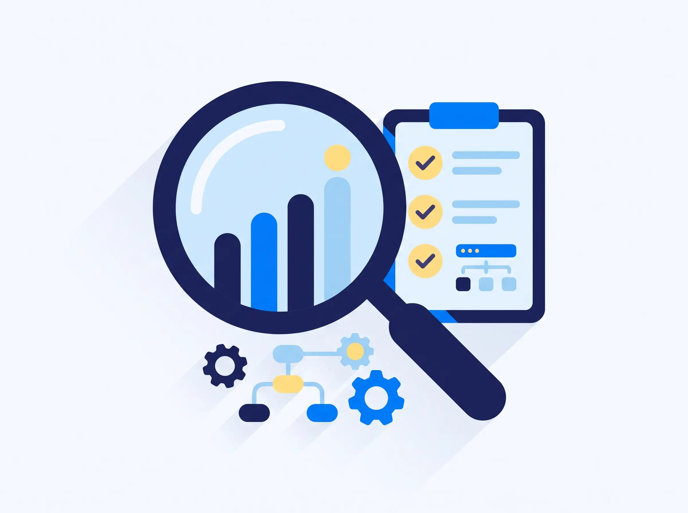
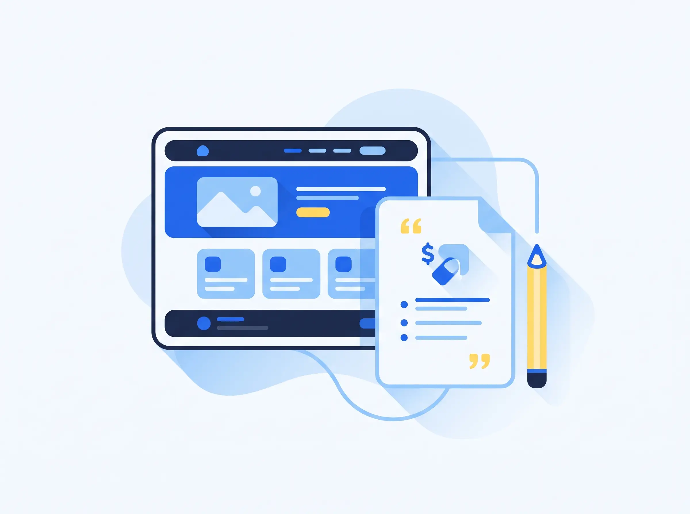
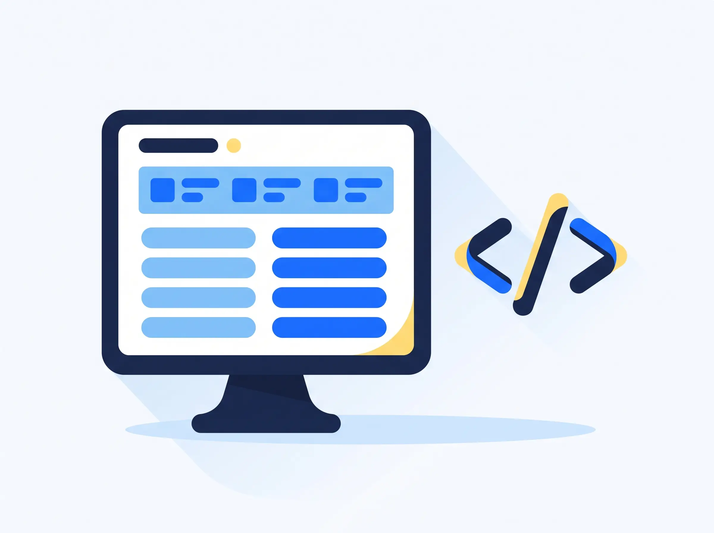
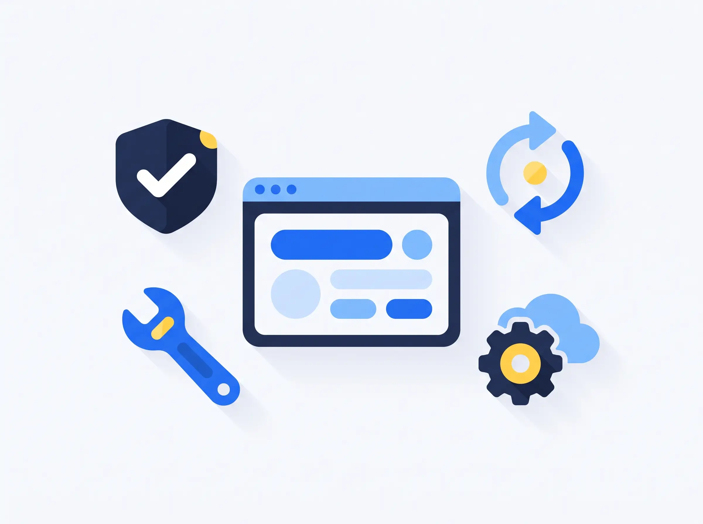

Bez chaosu i niedomówień. Prowadzę Cię za rękę przez cały proces — od pierwszej rozmowy, przez projekt i realizację, aż po wdrożenie strony i wsparcie, gdy już działa.
Zaczynamy od rozmowy. Poznaję Twoją firmę, klientów i to, co strona ma dla Ciebie zrobić — bez zobowiązań i bez żargonu.
Zanim powstanie pierwszy piksel, układam plan. Sprawdzam branżę i konkurencję oraz projektuję strukturę strony tak, by realnie pracowała na klientów.

Przygotowuję makietę najważniejszych sekcji oraz jasną wycenę i harmonogram. Wiesz dokładnie, co dostaniesz, ile to kosztuje i kiedy będzie gotowe.

Tu strona nabiera kształtu. Projektuję indywidualny design dopasowany do Twojej marki i buduję szybką, responsywną stronę — gotową na telefon, tablet i komputer.

Przed startem wszystko dokładnie sprawdzam. Testuję stronę na różnych urządzeniach, podpinam domenę i narzędzia, a na końcu publikuję ją na serwerze.
Wdrożenie to nie koniec, a początek. Pokazuję, jak korzystać ze strony, dbam o aktualizacje i bezpieczeństwo oraz rozwijam ją razem z Twoją firmą.
